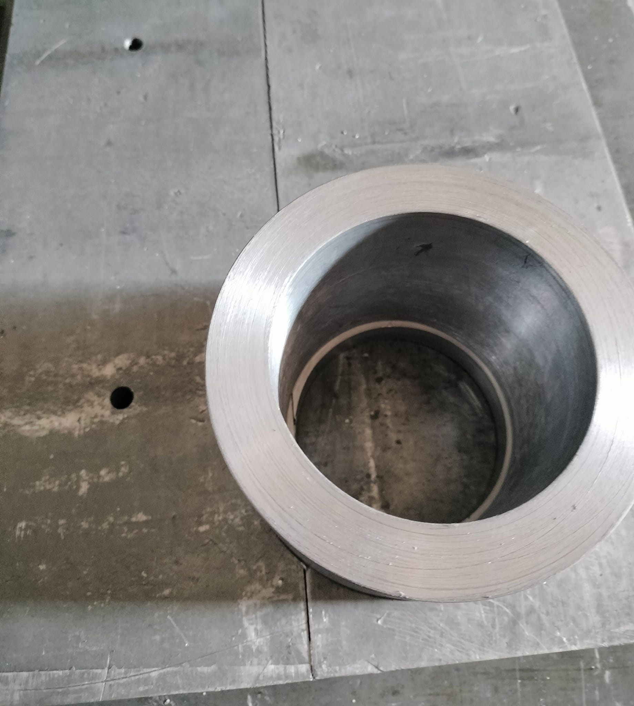
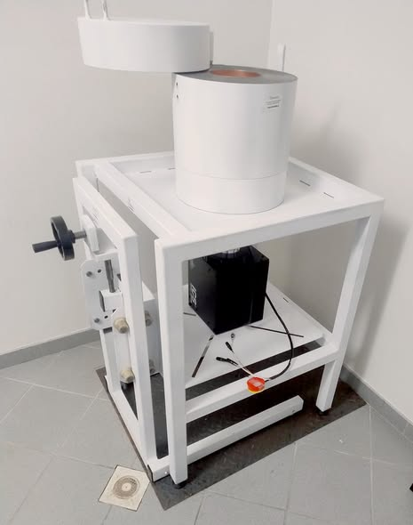
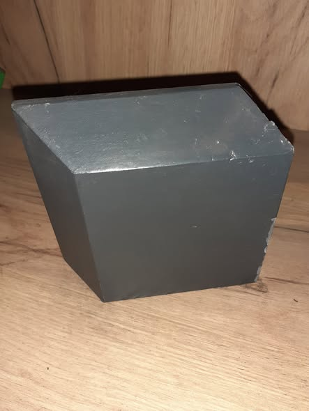
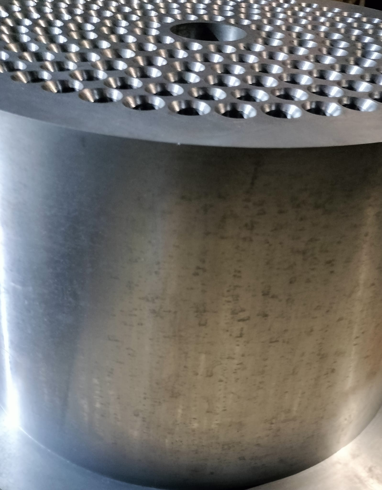
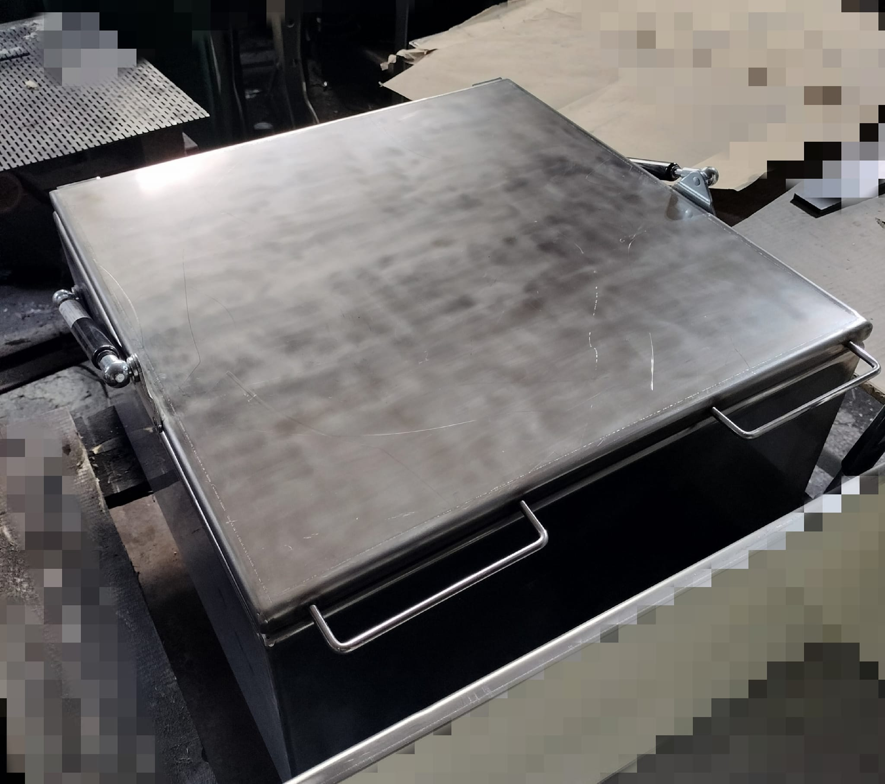
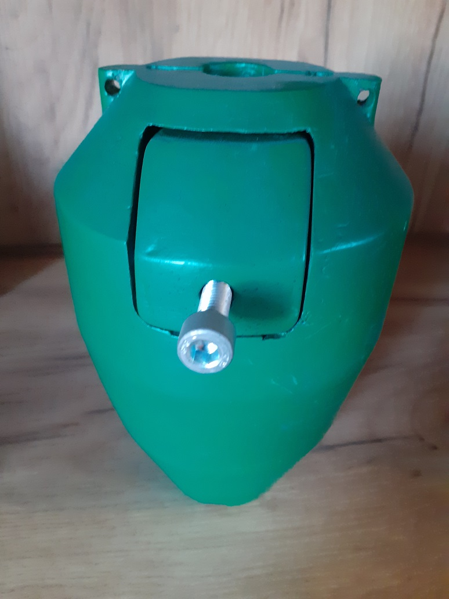
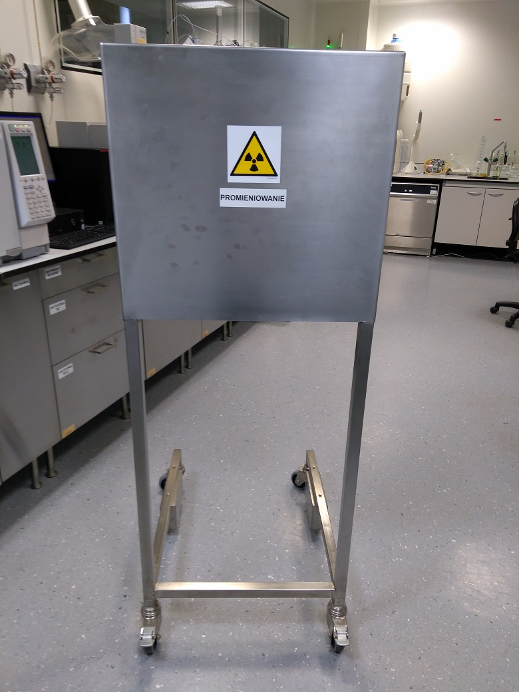
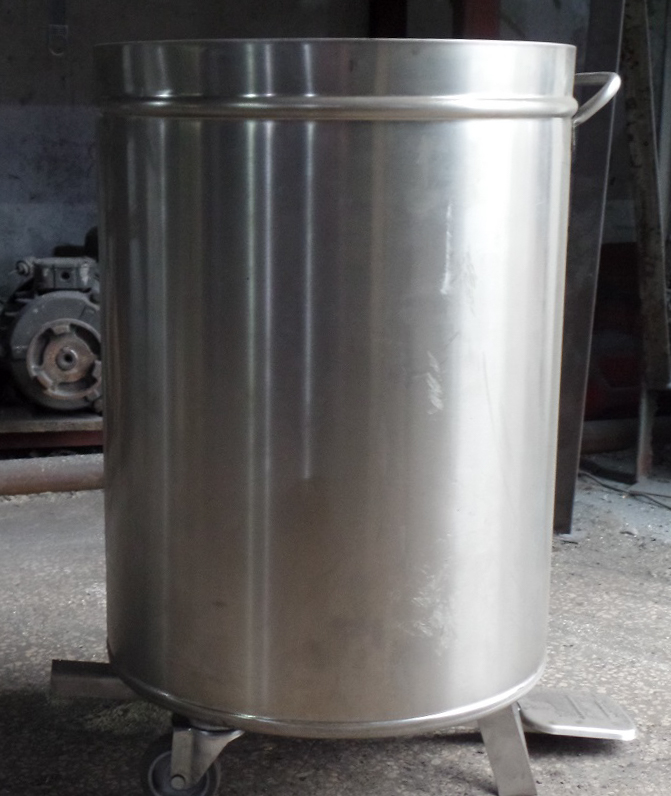
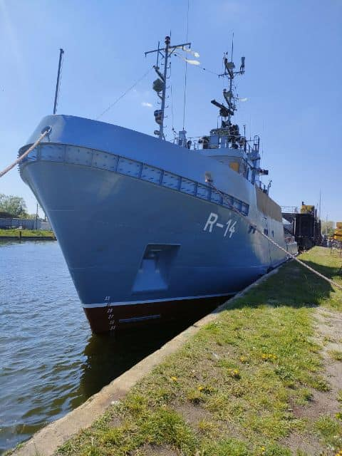

Zajmujemy się realizacją niestandardowych zleceń dla przemysłu jądrowego, szpitali oraz laboratoriów. Realizujemy projekty na podstawie wytycznych naszych klientów. Nasze 25-letnie doświadczenie pomaga w doborze odpowiednich rozwiązań, a realizacje wykonane przez nasz zespół znajdują się w laboratoriach oraz placówkach medycznych w Polsce oraz w krajach Europy.
Zajmujemy się również obróbką skrawaniem oraz produkcją odlewów z ołowiu i cynku.
PROSZ-MET Sp. z o.o. to polskie przedsiębiorstwo przemysłowe z siedzibą w Trzebini (woj. małopolskie), działające na rynku od 2001 roku. Firma wywodzi się z wieloletnich tradycji metalurgicznych i nieustannie rozwija swoje kompetencje.
Specjalizujemy się w odlewaniu ołowiu oraz jego stopów, a także cynku i jego stopów, produkcji osłon radiologicznych oraz obróbce skrawaniem. Jesteśmy otwarci na realizację indywidualnych, niestandardowych zamówień.

Specjalizujemy się w precyzyjnym odlewaniu ołowiu, w tym ołowiu niskoaktywnego, oraz jego stopów. Realizujemy zarówno seryjne, jak i jednostkowe zamówienia zgodnie z dokumentacją techniczną klienta.
Projektujemy i produkujemy kompleksowe osłony radiologiczne z ołowiu – pojemniki, cegły, kształtki i elementy niestandardowe dla pracowni RTG, medycyny nuklearnej i przemysłu jądrowego. Stosujemy również ołów niskoaktywny.
Wykonujemy precyzyjne toczenie, frezowanie i szlifowanie elementów metalowych na nowoczesnych maszynach CNC i konwencjonalnych.
Wykonujemy protektory cynkowe i aluminiowe do ochrony katodowej metalowych konstrukcji i instalacji w środowisku wodnym. Chronimy statki, instalacje portowe i podmorskie przed korozją elektrochemiczną.
Balast ołowiany to część kadłuba jachtu wykonana z ołowiu, której zadaniem jest obniżanie środka ciężkości, co zwiększa odporność jachtu na przechyły. Produkujemy balasty według indywidualnych specyfikacji.
Wytwarzamy pojemniki osłonne stosowane w technologii jądrowej, pojemniki na radiofarmaceutyki oraz kosze na odpady promieniotwórcze.
Wykonujemy przemiały materiałów powierzonych, między innymi żelazostopów. Specjalizujemy się w przemiałach materiałów wybuchowych oraz produkcji mielonego proszku aluminium-magnez stosowanego w produkcji wojskowej.
Realizujemy indywidualne projekty według specyfikacji klienta. Konsultacje techniczne i dobór materiału w cenie. Prototypy i małe serie.
Wybrane projekty zrealizowane dla klientów z Polski i zagranicy. Każda realizacja to połączenie inżynierskiej precyzji i doświadczenia.

☢ Radiological 3 zdjęciaKompletny zestaw osłonowy dla detektora promieniowania.

☢ Radiological 3 zdjęciaCegły ołowiane z wypustami i wyżłobieniami (jaskółczy ogon).

☢ Nuclear 2 zdjęciaPrecyzyjnie wykonane sito ołowiane dedykowane do reaktora jądrowego.
Elementy ołowiane do akceleratora liniowego z pełną dokumentacją.

☢ Nuclear 2 zdjęciaPojemnik 530x530 mm i wysokości 250 mm z obudową ze stali nierdzewnej, wyłożony blachą ołowianą 6 mm. Realizacja dla francuskiego laboratorium.

☢ Medical 3 zdjęciaPojemniki na radiofarmaceutyki stosowane w diagnostyce medycznej.

☢ Radiological 2 zdjęciaMobilne ekrany i osłony ołowiane dla personelu medycznego.

☢ Nuclear 2 zdjęciaSpecjalistyczne kosze do bezpiecznego przechowywania odpadów promieniotwórczych.

⚖ Marine 3 zdjęciaAnody cynkowe oraz aluminiowe produkowane dla przemysłu elektrochemicznego i morskiego. Na zdjęciu jednostka pływająca po remoncie, podczas którego zamontowano protektory wyprodukowane w Prosz-Met.
Na bieżąco publikujemy zdjęcia i relacje z kolejnych projektów na naszym Facebooku. Śledź nas, żeby być na czasie z tym, co właśnie wychodzimy z hali.
Nasze cegły dostępne są w pełnym asortymencie typów i wymiarów. Możliwa jest również produkcja cegieł o niestandardowych wymiarach oraz z ołowiu niskoaktywnego – prosimy o kontakt z Działem Handlowym.
| Nazwa / Wysokość | Grubość [mm] | Podstawowa – główna | Połówkowa | Narożna – kątowa | ||||||
|---|---|---|---|---|---|---|---|---|---|---|
| Typ | Waga [kg] | Dł. [mm] | Typ | Waga [kg] | Dł. [mm] | Typ | Waga [kg] | Dł. [mm] | ||
| Bazowa – dolna (h=20mm) | 50 | NB1 | 1,5 | 100 | DB1 | 0,8 | 50 | CB1 | 1,5 | 100x50 |
| Środkowa (h=100mm) | 50 | NM1 | 5,6 | 100 | DM1 | 2,6 | 50 | CM1 | 5,4 | 100x50 |
| Szczytowa (h=80mm) | 50 | NS1 | 4,0 | 100 | DS1 | 2,0 | 50 | CS1 | 4,0 | 100x50 |